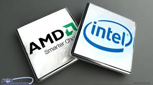

CPU
Major Suppliers
∼There are two major companies that produce CPUs: Intel® and AMD. Currently, Intel® dominates the market as AMD has yet to make a mainstream CPU in 5 years. That is will soon change as AMD is about to launch its new line of CPUs, Zen.∼
History of Intel® Microarchitecture (since 2003)
- Pentium M
- Enchanced Pentium M
- Intel Core
- Penryn
- Nehalem
- Westmere
- Sandy Bridge
- Ivy Bridge
- Haswell
- Broadwell
- Skylake
History of AMD Micoarchitecture (since 2003)
- K8 Hammer
- Family 10h (K10)
- Fusion Family 12h
- Bobcat Family 14h
- Jaguar Family 16h
- Puma Family 16h (2nd-gen)
- Bulldozer Family 15h
- Piledriver Family 15h (2nd-gen)
- Steamroller Family 15h (3rd-gen)
- Excavator Family 15h (4th-gen)
- Zen